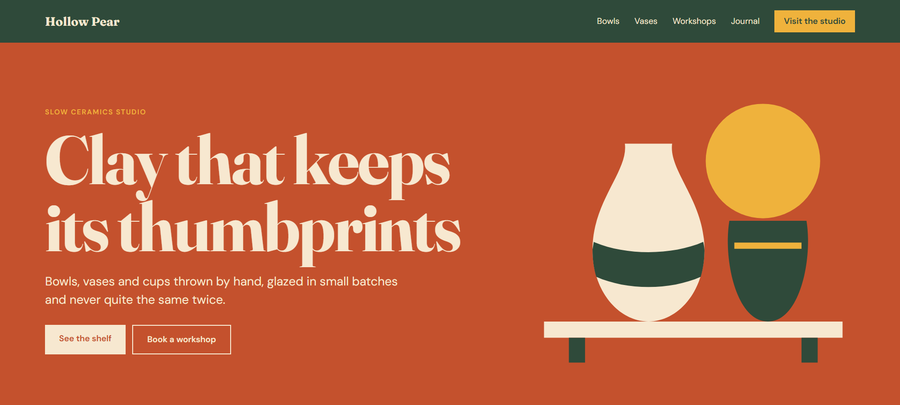
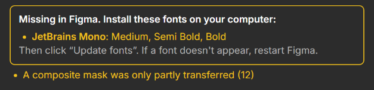
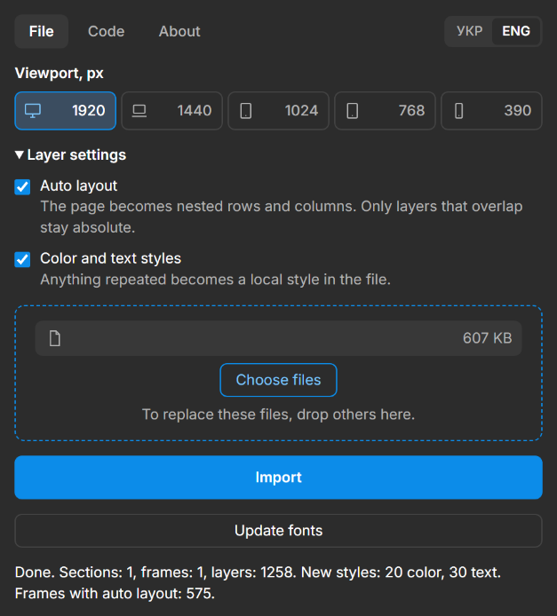

Layerdrop - HTML to Layout. Безкоштовний плагін Figma
Киньте файл.
Отримайте шари
Layerdrop перетворює HTML, збережені сайти, архіви й листи на редаговані шари Figma. Результат виглядає як сторінка в браузері.
Плагін готується до публікації у Figma Community і поки недоступний для встановлення.

Що виходить у Figma
Плагін відкриває сторінку так, як її показує браузер, і збирає з неї шари. Сторінка лишається цілою: без розбиття на шматки й без обрізання.
- Секція й фреймиКожен файл стає секцією, а в ній лежить по фрейму на кожен вибраний viewport. Ширина фрейма дорівнює viewport, а висота дорівнює висоті сторінки.
- Auto layoutКонтейнери розбираються на вкладені рядки й колонки, зокрема сітки та блоки з різними проміжками. Auto layout лишається лише там, де жоден шар не зсунувся більш ніж на 1 px. Шари, що перекриваються, лишаються абсолютними. Функцію можна вимкнути.
- Кольори й текстКолір або налаштування тексту, що трапляється щонайменше двічі, стає локальним стилем. Під час повторного імпорту тієї самої сторінки стилі використовуються повторно. Це теж можна вимкнути.
- Назви шарівШари названі англійською за змістом:
Header,Button · Get started,H2 · Pricing. Службові класи на кшталтcss-1a2bу назви не потрапляють. - Градієнти й SVGЛінійні, радіальні й конічні градієнти переносяться як справжні градієнти Figma, тому кольори й точки можна редагувати. SVG стає вектором, а не картинкою.
- Відсутні шрифтиЯкщо шрифту немає у Figma, а його файл є у HTML або zip, текст приходить контурами поруч із прихованим текстовим шаром. Плагін показує, що встановити, а кнопка «Оновити шрифти» робить текст редагованим.

- ЗбоїЗбій окремого елемента, файла чи шрифту не зупиняє імпорт. Плагін пропускає проблемний елемент і описує це в попередженнях.
Будь-яка ширина
Готові значення: 1920, 1440, 1024, 768 і 390. Натискання вмикає чи вимикає viewport, а натискання на число дає вказати свою ширину.
Адаптивна сторінка перебудовується, як у браузері. Неадаптивна лишається свого розміру й виходить за межі фрейма, але не обрізається.
Два способи
Кинути файл
Для готових сторінок, збережених сайтів і сторінок за логіном. Те, що відкривається у вашому браузері, можна зберегти й імпортувати.
- Картинки, стилі, шрифти й скрипти з папки чи zip підтягуються за відносними шляхами.
- Один файл із розширення SingleFile уже містить картинки, стилі й шрифти.
- Папку просто перетягніть у вікно.
Вставити код
Для фрагментів, шаблонів листів і згенерованої розмітки. На вкладці «Код» вставте HTML і натисніть «Імпортувати у Figma».
- Поруч із кодом немає файлів, тому локальні шляхи не спрацюють.
- Картинки мають бути вбудовані в base64 або лежати за https-посиланням на сервері, який дозволяє CORS.
Що можна кинути
- HTML
.html,.htm, один файл або кілька, кожен імпортується окремо. HTML разом із картинками теж можна виділити одразу. - Збережені сайти
.mhtml,.mhtабо HTML із SingleFile. - Папки й архівиПапка або
.zip, зокрема архів із Google Stitch. Імпортуєтьсяindex.htmlверхнього рівня, а якщо його немає, усі HTML-файли. - Листи
.eml,.emlx,.msg. Назва фрейма береться з теми листа.
Порівняння
Безкоштовно, без ліміту імпортів, з файлами, архівами, листами й вставленим кодом. Ось як Layerdrop виглядає поруч з іншими інструментами.
За публічними сторінками цих інструментів станом на 6 листопада 2026 року. «Не вказано» означає, що там цього не знайдено.
Пропустити таблицю| Що | Layerdrop | Pagelift | html.to.design | Розширення Figma |
|---|---|---|---|---|
| Доступ | ||||
| Ціна | Безкоштовно | БезкоштовноБез ліміту імпортів. | Частково10 імпортів, далі 10 на місяць із безкоштовним акаунтом. PRO: $12 на місяць за рік або $18 помісячно. | Плани FigmaProfessional, Education, Organization, Enterprise. |
| Формат | ПлагінПлагін Figma. | Плагін і розширенняПлагін Figma й розширення Chrome. | Плагін і розширенняПлагін Figma й розширення для браузера. | РозширенняРозширення Chrome. |
| Що можна імпортувати | ||||
| Імпорт за посиланням | В розробці | ТакДо п'яти публічних сторінок. | ТакПублічні сайти. | Не вказаноЗахоплення у браузері. |
| Сторінки за логіном | Через файлЗбережіть сторінку в SingleFile й киньте файл. | ТакВласне розширення Chrome. | ТакВласне розширення. | Не вказано |
| HTML, zip, MHTML | ТакА також папки. | ЧастковоЗгадано файл власного розширення. | Так | Не вказано |
| Листи .eml, .emlx, .msg | Так | Не вказано | Так | Не вказано |
| Вставлений код | Так | Не вказано | ТакРедактор HTML і CSS. | Не вказано |
| Сторінки на JavaScript | ТакСкрипти виконуються в ізольованому вікні. | Через розширенняЗа посиланням скрипти не виконуються. | Через розширенняЗахоплює те, що видно у вкладці. | ЧастковоВажкі анімації й canvas можуть вийти неточно. |
| Що виходить | ||||
| Ширини viewport | Будь-яка1920, 1440, 1024, 768, 390, кожну можна змінити. | Три1440, 768, 390. | ТакДесктоп, планшет, телефон. | Не вказано |
| Auto layout | ТакЛише де нічого не зсувається. | ТакЛише де нічого не зсувається. | Так | Не вказано |
| Локальні стилі | ТакКольори й текст. | ТакКольори й текст. | ТакСтилі й змінні. | НіПрості шари, можуть прив'язуватись наявні змінні. |
| Відсутні шрифти | КонтуриСписок, що встановити, і «Оновити шрифти». | Не вказано | ЗамінаЗіставлення з наявними або завантаження з плагіна. | Не вказано |
| Hover-стани | В розробці | Так | Так | Не вказано |
| Темна тема | В розробці | Так | Так | Не вказано |
| Посилання прототипу | В розробці | Так | Так | Не вказано |
Як це працює
- 1Виберіть один або кілька viewport.
- 2За потреби змініть налаштування шарів: auto layout і локальні стилі. Вибір запам'ятовується.
- 3Киньте файл у вікно й натисніть «Зчитати». Файли лишаються в списку, тому їх можна зчитати ще раз з іншими viewport.
- 4На полотні з'явиться секція, а вікно покаже кількість фреймів, шарів і нових стилів та попередження, якщо щось не перенеслося.
Плагін відкриває сторінку в ізольованому вікні, де виконуються її скрипти, а браузер розкладає її на потрібну ширину. Потім плагін зчитує результат і створює з нього шари. Анімації при прокручуванні показуються в кінцевому стані.

Встановлення
Layerdrop ще не опублікований у Figma Community, тому поки встановити його не можна. Коли плагін пройде рецензування, посилання з'явиться тут.
Після публікації це виглядатиме так
- 1Відкрийте сторінку Layerdrop у Figma Community.
- 2Запустіть плагін у файлі дизайну. Він працює лише у Figma Design.
- 3Далі шукайте Layerdrop у меню плагінів Figma.